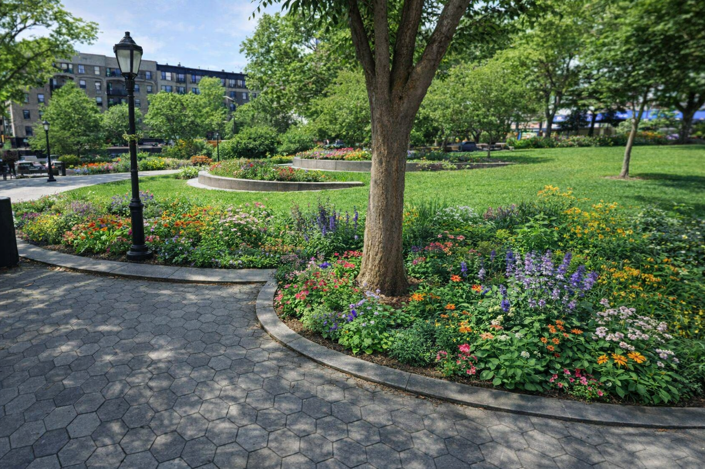
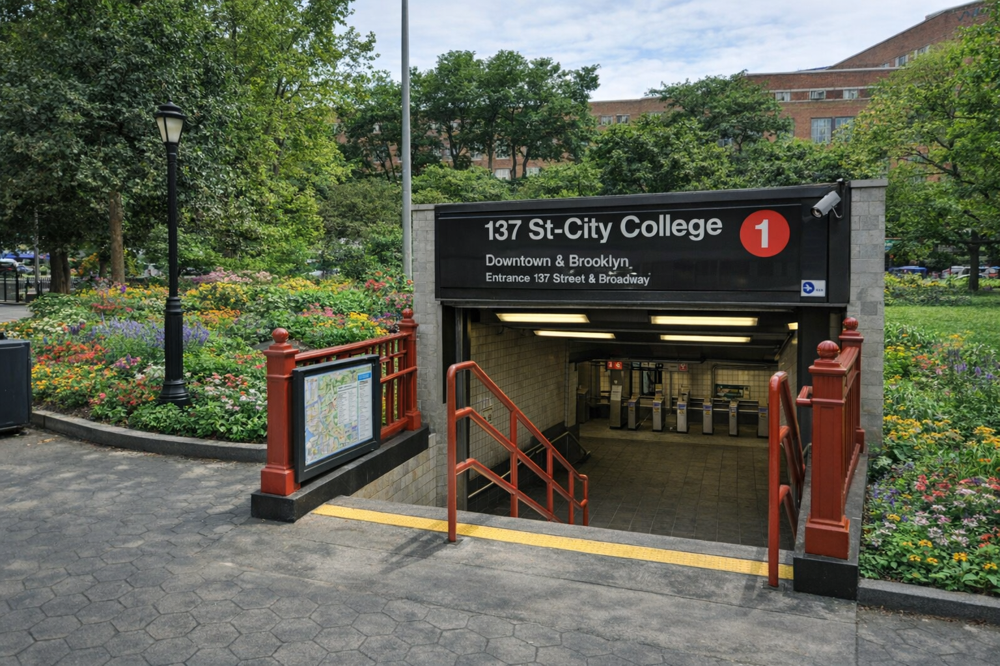

About the Project
Creating a better, safer plaza is essential because it directly shapes how people experience and move through public space in their daily lives. A thoughtfully designed plaza does more than simply look appealing—it encourages walking, social interaction, and community engagement by offering a comfortable, intuitive environment where people naturally want to spend time. When safety is prioritized through clear pathways, good lighting, open sightlines, and well‑organized activity zones, the space becomes accessible to everyone, including children, seniors, and individuals with disabilities. These design choices reduce risks associated with traffic conflicts, poor visibility, and overcrowding, making the plaza feel welcoming rather than stressful or chaotic. A safer, more inviting plaza also strengthens the local economy. When people feel comfortable lingering, they are more likely to visit nearby shops, support small businesses, and participate in community events, creating a vibrant atmosphere that benefits the entire neighborhood. Beyond its practical functions, an improved plaza can help cultivate a stronger sense of identity and belonging by reflecting the character and values of the community it serves. Over time, what may have once been an underused or unsafe area can transform into a lively, cherished gathering place where residents meet friends, relax outdoors, and build connections with one another. In this way, investing in a safer plaza is not just a design decision—it’s a commitment to improving quality of life and strengthening the social fabric of the community.
The Problem
Lack of Safety
Poor lighting creates unsafe conditions during the nighttime, especially in areas where visibility is already limited by the environment. In this plaza, the lack of functioning streetlights leaves long stretches of the space in near‑darkness, making it difficult for pedestrians to see where they are walking or to feel aware of their surroundings. The problem is made worse by the many overgrown trees that dangle over the walls, casting heavy shadows and blocking what little ambient light might otherwise reach the ground. These dark pockets can make people feel vulnerable, discourage evening use, and increase the risk of accidents or unsafe encounters. Improving lighting and managing tree overgrowth would significantly enhance visibility, comfort, and overall safety for anyone passing through after sunset.
Low Engagement
The plaza lacks stores, activities, and opportunities for community interaction, which leaves the space feeling empty and underutilized. Many of the surrounding buildings have no shops, cafés, or establishments on the ground floor, creating long, inactive stretches with little reason for people to stop, gather, or explore. Without playgrounds, recreational features, or designated areas for families and children, the plaza fails to attract consistent daily use. The absence of community events—such as markets, performances, or cultural gatherings—further limits social engagement and prevents the plaza from becoming a lively neighborhood hub. As a result, the space feels disconnected from the community it serves, offering few amenities that encourage people to spend time there or interact with one another.
Poor Design
Poor design makes the plaza unappealing and uncomfortable for people of any age, largely because the space is dominated by hard surfaces and lacks inviting visual elements. With minimal greenery—especially the kind of bright, eye‑catching plants that bring life and color—the plaza feels flat, harsh, and unwelcoming. There are few soft areas to sit, relax, or play, which means children, teens, adults, and seniors all experience the space as dull and uninspiring. The absence of shade, texture, and natural features reduces both comfort and usability, making the plaza feel more like a leftover concrete zone than a place designed for people. Without thoughtful landscaping or engaging design elements, the environment fails to attract visitors or encourage them to stay, ultimately limiting the plaza’s potential as a vibrant community space.
Site / Context
Montefiore Plaza currently feels low in engagement and lacks the elements needed to attract and hold people’s attention, but the issue extends beyond appearance into how the space functions for the community. Although the plaza is used by people of all age groups during the day—ranging from children and teens to adults and seniors—it does not fully support their needs or encourage them to stay for long periods of time. A well-designed plaza should promote comfort, safety, and interaction, yet the current layout lacks clear pathways, organized gathering areas, and intuitive design features. This makes movement through the space feel unstructured and limits opportunities for social connection, preventing the plaza from reaching its full potential as a shared community environment. Safety is another major concern, particularly due to poor lighting and visibility. Large sections of the plaza remain dimly lit at night, creating an unwelcoming and sometimes unsafe atmosphere. Overgrown trees hang over parts of the space, casting heavy shadows and blocking what little light is available, which further reduces visibility for pedestrians. These conditions make it difficult for people to feel aware of their surroundings and discourage use of the plaza after sunset. Combined with the unfinished train station and surrounding fences that create both physical and visual barriers, the space feels enclosed and disconnected rather than open and inviting. As a result, even though the plaza sees activity during the day, it fails to provide a sense of safety and comfort throughout all hours. In addition to these concerns, the plaza lacks the activity, amenities, and visual appeal needed to sustain consistent engagement. Many surrounding buildings have out-of-business storefronts, contributing to a sense of inactivity and neglect, while the absence of shops, cafés, or community-focused spaces leaves little reason for people to gather. There are no playgrounds, recreational features, or regular events to attract families or encourage interaction, which limits the plaza’s role as a social hub. The design itself further adds to the problem, as it is dominated by plain, hard surfaces with minimal greenery and no vibrant plantings to create a welcoming atmosphere. Without comfortable seating, shade, or visually engaging elements, the plaza feels harsh and underdeveloped, ultimately falling short of its potential to become a lively, inclusive, and community-centered public space.
Design Options

Option 1: Green Plaza
This design transforms Montefiore Plaza into a lush, nature-centered environment that prioritizes greenery, comfort, and overall well-being. By introducing a diverse mix of trees, seasonal flowers, and layered plantings, the plaza would shift from a flat and underwhelming space into a vibrant, visually engaging landscape. Shade trees would be strategically placed to provide relief from heat and create comfortable areas for sitting and gathering, while colorful flower beds and native plants would add texture, movement, and year-round interest. This increase in greenery would not only improve the plaza’s appearance but also contribute to better air quality, reduced noise, and a more calming atmosphere for visitors. The Green Plaza concept also emphasizes wellness by creating spaces that encourage relaxation, social interaction, and light activity for people of all ages. Features such as shaded seating areas, walking paths, and small garden zones would invite users to slow down and spend time in the space rather than simply passing through. Open lawn areas or flexible green spaces could be used for casual recreation, small events, or quiet reflection, making the plaza adaptable to different needs throughout the day. By designing with accessibility and comfort in mind, the space would become more inclusive, supporting children, teens, adults, and seniors alike. In addition, this approach helps strengthen the plaza’s connection to the community by making it a more inviting and livable environment. A greener, more welcoming space would encourage more consistent use, which can help support nearby businesses and create opportunities for community events such as markets or outdoor gatherings. Overall, the Green Plaza concept reimagines the area as a refreshing urban oasis—one that balances natural beauty with functionality, turning an underutilized space into a vibrant and healthy destination for the neighborhood.

Option 2: Market Space
This design reimagines Montefiore Plaza as a lively, activity-driven destination centered around local vendors and community interaction. By introducing designated vendor zones, the plaza would become a place where small businesses, food stalls, and pop-up shops can operate regularly, bringing energy and purpose to the space. These areas could be flexible, allowing for daily use as well as larger events such as weekend markets or seasonal fairs. Organized layouts with clear pathways and defined zones would make the plaza easier to navigate while ensuring that activity feels structured rather than chaotic. This approach directly addresses the current lack of storefront engagement by activating the space with consistent economic and social activity.

Option 3: Pedestrian Hub
This design reimagines Montefiore Plaza as a safe, efficient, and people-centered transit hub that prioritizes pedestrian movement and connectivity. By improving crosswalks, walkways, and circulation paths, the plaza would become easier and more intuitive to navigate for individuals of all ages and abilities. Clearly marked crossings, wider sidewalks, and traffic-calming features would reduce conflicts between pedestrians and vehicles, making the area feel safer and more accessible. The layout would emphasize smooth transitions between different parts of the plaza, allowing people to move comfortably whether they are commuting, meeting others, or simply passing through.
Final Proposal
The final proposal combines the strongest elements of all three concepts into a single, cohesive vision for Montefiore Plaza. It integrates abundant greenery with trees, flowers, and shaded areas to create a more inviting and calming environment that improves both comfort and visual appeal. At the same time, it prioritizes safety through better lighting, clearer pathways, improved visibility, and the removal of physical barriers such as unfinished fencing around the train station. The design also includes flexible community spaces that can support vendor markets, events, seating areas, and casual gatherings, ensuring the plaza remains active and useful throughout the day for people of all ages. Overall, this hybrid approach transforms the plaza into a safer, greener, and more engaging public space that better reflects the needs of the surrounding community.
Reflection
AI played a significant role throughout the development of this project by supporting both the technical and creative aspects of the design process. It assisted in generating and structuring the website code, which helped bring the project together in a clear and organized format. AI was also used to create and refine visual representations of the “ideal after” images, helping to show how Montefiore Plaza could realistically look under each design option. These visuals made it easier to communicate ideas such as the Green Plaza, Market Space, and Pedestrian Hub in a more concrete and understandable way. However, the final decisions were made by me, especially when selecting and shaping the three design proposals. I chose how each concept should function, what features should be included, and how the space should ultimately serve the community. AI acted as a tool to support and enhance my ideas rather than replace them, helping me explore different possibilities and refine my vision for the plaza. It also provided guidance on how to structure the project effectively, ensuring that the presentation, descriptions, and layout were clear, organized, and meaningful. Overall, this project was a combination of human creativity and AI assistance. While AI helped generate code, visuals, and design inspiration, the direction, purpose, and final vision were guided by my own choices and understanding of the community’s needs. This collaboration allowed me to develop a stronger and more realistic proposal, ensuring that the final project was both well-designed and thoughtfully planned.